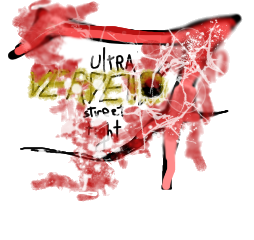

60

Caricamento…
Ultra Verdello Street Fight 7
REPORT BUG
SCEGLI IL PERSONAGGIO
Giocatore 1: A / D per scegliere, H per confermare · Giocatore 2: frecce per scegliere, ù per confermare · Esc per tornare indietro
KEYBINDS
ENTRA IN UNA STANZA
Digita il codice di 4 caratteri della stanza.
ENTRA
ANNULLA
REPORT BUG
Descrivi il problema: il contesto di gioco viene allegato automaticamente e il report viene inviato al server, senza scaricare file. Esc per chiudere.
INVIA
ESPORTA MD
COPIA
CHIUDI
📱
Ruota il telefono in orizzontale
Un picchiaduro ha bisogno del campo largo: in verticale i lottatori finiscono uno sopra l'altro.
GIOCA LO STESSO